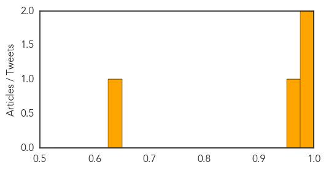

Meningitis
30-Day Web Trend
30-Day Twitter Trend
Article Locations
Article Confidences
Top Articles:
Top Tweets:
-
No tweets found for Jun 12, 2015
Dengue Fever
30-Day Web Trend
1 alerts, 1 warnings

30-Day Twitter Trend
0 alerts, 0 warnings

Article Locations

Article Confidences

Top Articles:
- 0.994
- Dengue deaths sound the alert
- 0.961
- The Island
- 0.933
- St Catherine health department steps up ZIKV preparations
- 0.927
- Dengue deaths rise by 100%, Health Ministry reveals
- 0.926
- Health ministry develops drum covers to guard against mosquitoes
- 0.852
- Modifying mosquitoes to stop transmission of dengue fever
- 0.813
- Is Malaysia ready to handle and treat folk with Mers?
- 0.786
- Health Ministry Introduces Drum Cover to Reduce Mosquito Breeding
- 0.721
- Health Ministry develops drum cover to reduce mosquito breeding
Top Tweets:
-
No tweets found for Jun 12, 2015